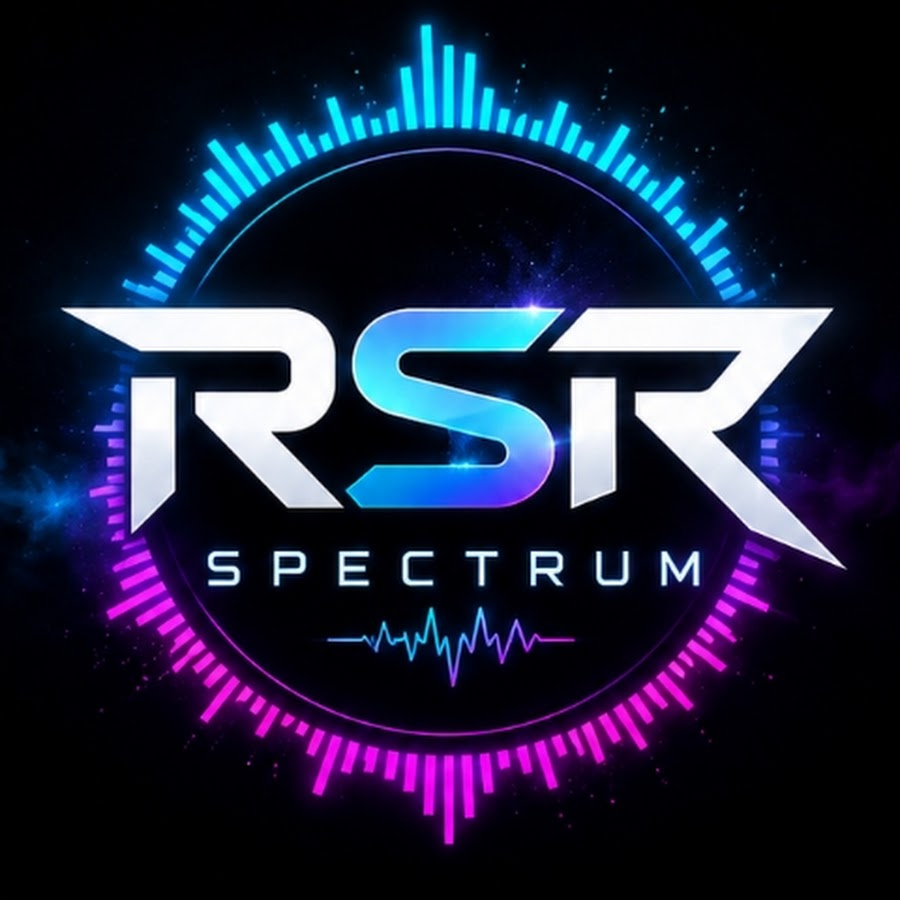
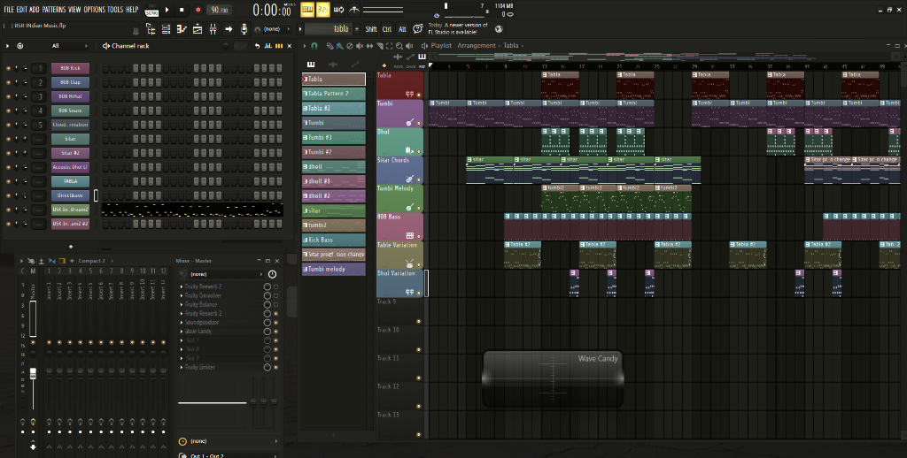
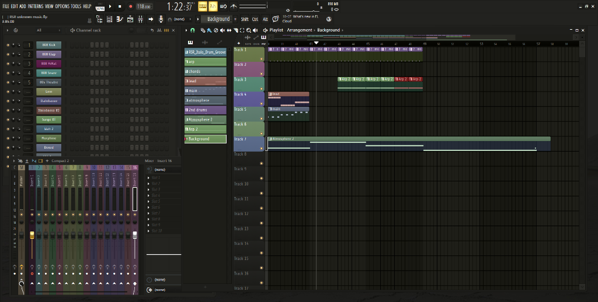
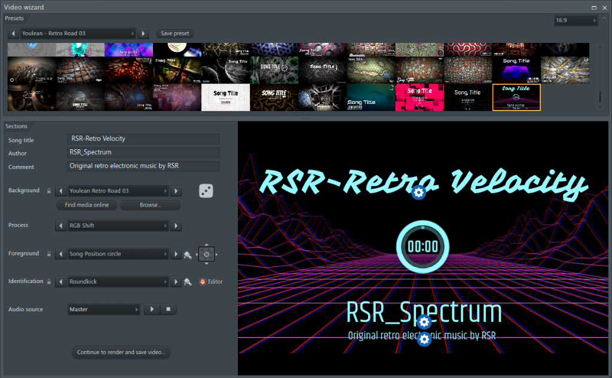
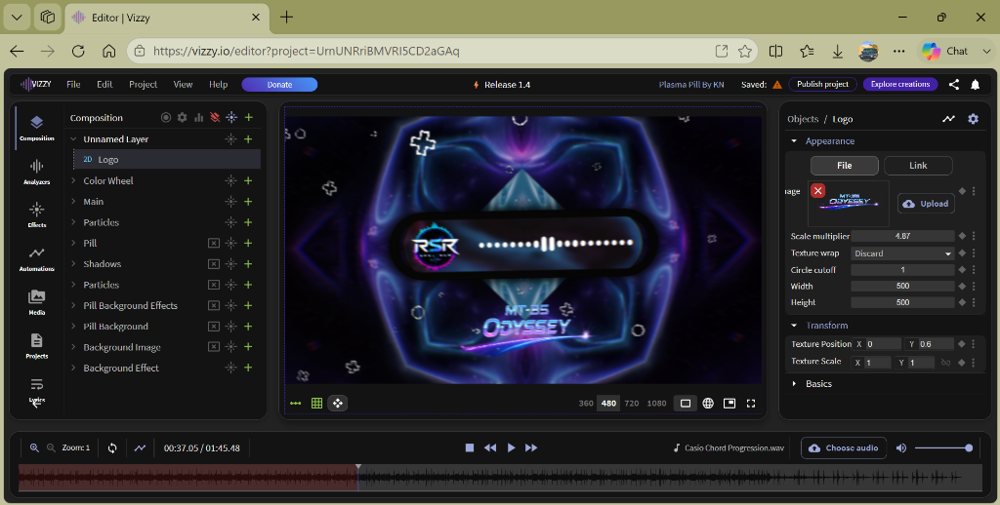
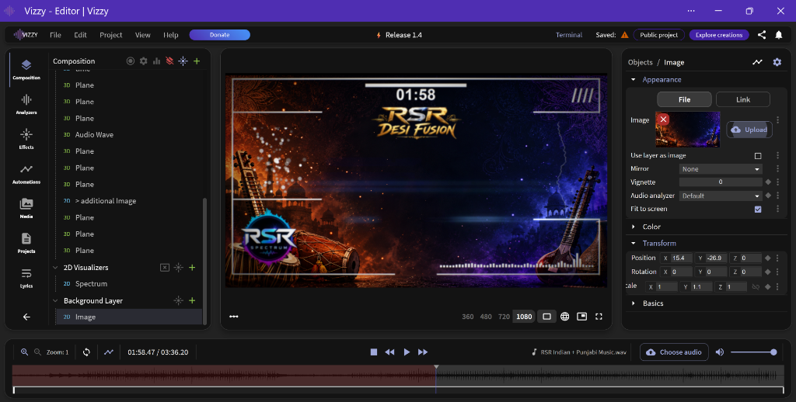

Sound & Code.
Crafted to Resonate.
Welcome to the creative showcase of RSR Spectrum. Alongside developing open-source applications like CastDrive for Android and Windows, I compose original electronic synth tracks, explore vintage Casio MIDI hardware, and engineer real-time audio visualizers.

RSR Spectrum
@RSR_SpectrumIndependent software developer, music creator, and technology enthusiast. When I am not building low-latency screen mirroring solutions like CastDrive or managing the RSR-Projects F-Droid repository, I focus on original music production, rhythmic sound design, Casio keyboard synthesis, and audio-reactive visuals.
Original Music
Composing original electronic, retro synthwave, heavy bass, and cultural fusion tracks under the RSR Spectrum moniker.
Music Production
Layering polyrhythmic drums, sub-bass textures, and melodic sound design using digital audio workstations including FL Studio and GarageBand.
MIDI Experiments
Connecting physical hardware synthesizers, vintage Casio keyboards (MT-35), and custom controllers into modern digital production workflows.
Software Projects
Architecting independent Android and Windows tools such as CastDrive for low-latency screen mirroring, multi-touch input, and audio streaming.
Creative Technology
Bridging generative visual synthesis (ZGameEditor, Vizzy) with audio waveforms to craft synchronized music visualizer experiences.
RSR Spectrum on YouTube
Official channel for original music uploads, synth explorations, and audio-visual experiments.
Behind the Music & Visualizers
Direct screen captures from FL Studio sequencing sessions and real-time audio visualizer engineering (ZGameEditor and Vizzy). Click any image to view in full resolution.

FL Studio — Indian × Punjabi Fusion
90 BPM timeline view showing Punjabi rhythm sequencing, custom drum rack patterns, and layered synth arrangements.

FL Studio — Retro Synth & 808s
Arranging analog basslines, modulated cutoff automation, and 808 kit patterns inside the FL Studio playlist view.

ZGameEditor — 3D Wireframe Tunnel
Building real-time GPU-rendered cyber corridors reactive to bass transients and synth harmonics for RSR Retro Velocity.

Vizzy — Casio MT-35 Visualizer
Concentric radial waveform visualizer reacting in real time to raw waveforms captured from the Casio MT-35 synth keyboard.

Vizzy — Desi Fusion Spectrum
Frequency band analyzer with neon glow overlays capturing tabla transients, dhol attack, and lead melody frequencies.
FL Studio
Primary digital audio workstation used for beat programming, synthesizer sound design, MIDI sequencing, and final track mastering.
GarageBand
Complementary DAW used for rapid mobile sketchpad ideation, portable melody tracking, and multi-track draft arrangements.